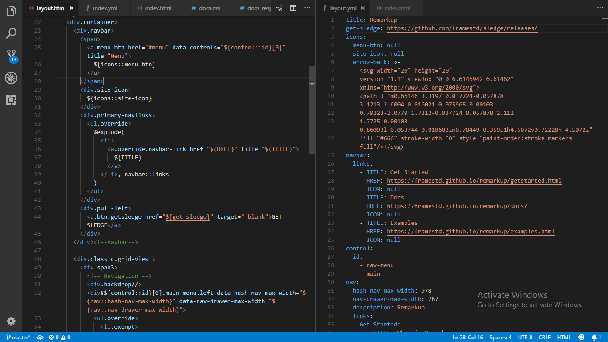

Sledge
Sledge is a python package for building websites—it is a very effective tool for site building. The Sledge project is a part of Frame Studios Developer Indulgent Program(DIP) which aims to make works easier for developers. You just have to write once and never again. It is optimised to be fast enough. Sledge uses Frame Remarkup and Templating Standards as defined by
Remarkup 1.0. It is meant to make you lazy! Grab your sledge we'll teach you how to do the hammering, and holla, voila you've nailed it all at once.
Have the best relationship with your projects
Want to keep a cordial relationship with your code? Then you need sledge. Sledge gives you that relationship with your projects that makes you understand the in and out of your code without losing track or getting fed up, and never get bored.
One change triggers a change everywhere
With variables declared in a YAML file you define your templates—change your template once and every page linked to that template has the change. No stress at all.
Take control
Separate the part of your code that is likely to change, keep them as variables in your YAML source, link it back to your Remarkup or Frame Markup source and voila "you nailed it all" is what you get.
Do you think we are re-inventing the wheel?
No. That is not more like it. I know you may think we are creating again what has been created. Nah! it's more like we are modifying or adding advanced and better features to what has been created, in our own way. The only way you can find out we are not, is when you start using sledge.

You can always do more than mere templating
Make your work easier you don't have to write the same thing—even with a slight difference—on and on. Populate your navbar, navigation and footer links in one statementusing framefunctions
%explode(...) method. When writing codes in pre tags, you don't have to slow down and get tired of < >. We make the task easier: write normal tags inside the
%code(...) method.